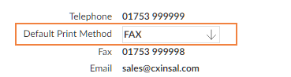

Faxing/Emailing Subcontractor Documents in OA
For subcontractor certifcates and payment and deduction statements, you can generate multiple documents and fax or email them to the appropriate recipients:
- If you run Email Statements of Deduction or Email Certificates, will email the documents to:
- All the subcontractors whose default print method is EMAIL.
- All the subcontractors whose default print method is blank but who have an email address.
- If you run Fax Statements of Deduction or Fax Certificates, will fax the documents to:
- All the subcontractors whose default print method is FAX.
- All the subcontractors whose default print method is blank, and who have no email address is but have a FAX number.
- If you run Print Other Statements of Deduction or Print Other Certificates, will print the document for:
- All the subcontractors whose default print method is PRINT.
- All the subcontractors whose default print method is blank and who have no FAX number or email address.
In each case produces a PDF output that shows all the transactions that were faxed, emailed or printed - which you can see using Report Status. If the review feature is enabled you need to release faxes and emails in order to send them - see Reviewing Messages.
Configuration
- In Subcontractor Maintenance:
- Set the Default Print Method field on the individual subcontractor record.

- Make sure the Email or Fax fields are filled in with the appropriate email address or fax number.
There is a utility function, Update default print method for Subcontractors, that allows you to update the Default Print Method in bulk.